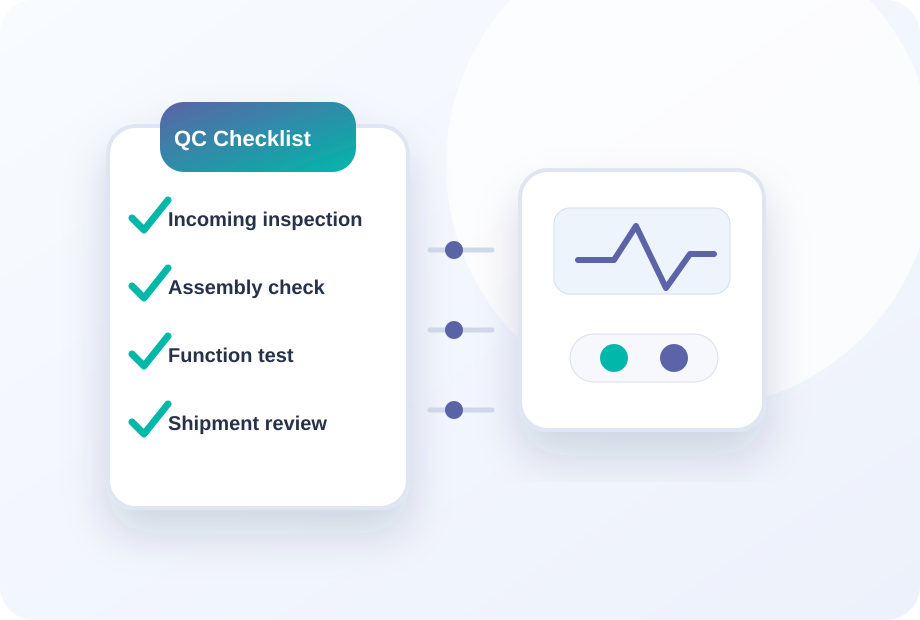
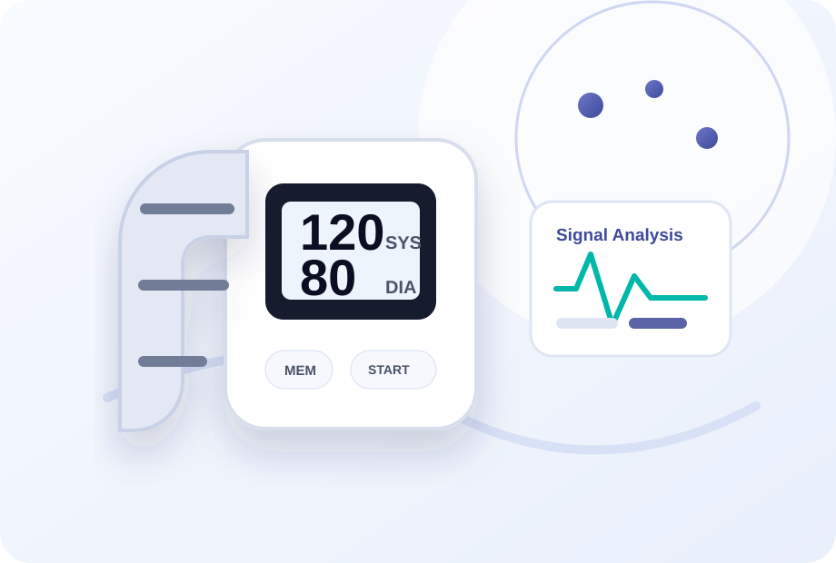
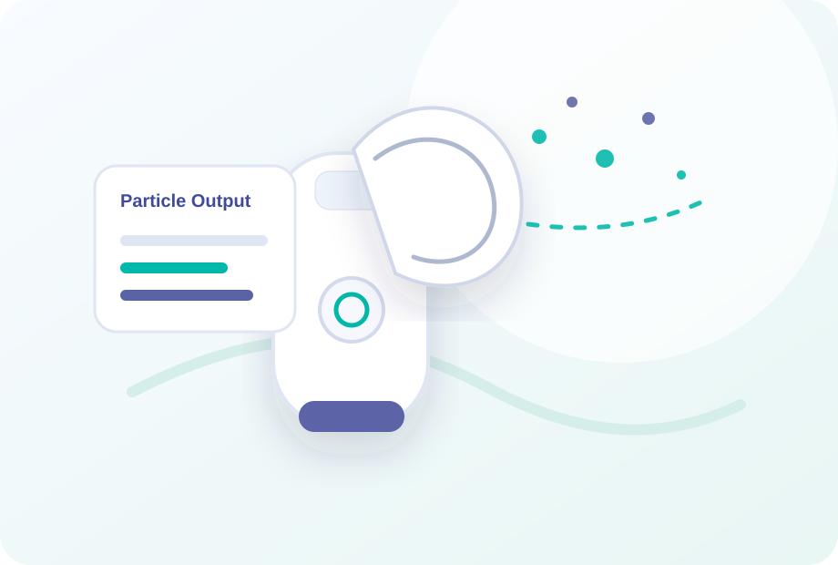

Elderly Care
Timed reminders for daily medication routines.
 Get a Quote
Get a Quote
Medication management products help brands build practical home health product lines.
Timed reminders for daily medication routines.

Medication reminder accessories for home healthcare lines.

Retail-ready packaging for pharmacy channels.
Pill box timer models can be discussed based on target market, packaging and language needs.
Medication reminder product direction for private label programs.
Request DetailsYes. Packaging and manual localization can be discussed based on project requirements.
Importers, pharmacy chains, healthcare brands and elderly care product distributors.
Send product interest, quantity, target market and packaging needs.